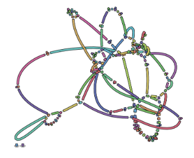

Unicycler assembly of SARS-CoV-2 genome with preprocessing to remove human genome reads
Contributors
Questions
How can a genome of interest be assembled against a background of contaminating reads from other genomes?
How can sequencing data used to obtain an assembled genome?
Objectives
Know basic characteristics of SARS-CoV-2
Understand Nanopore and Illumina technologies
Detect and remove human reads from SARS-CoV-2 sequencing reads
Know main de novo genome assembly algorithms
Perform a hybrid de novo genome assembly
.enlarge120[
SARS-CoV-2
]
The severe acute respiratory syndrome coronavirus, known as SARS-CoV-2, is a betacoronavirus which belongs to the subfamily Coronavidinae, family Coronavidae.
-
Genome characteristics:
- Positive-sense single-stranded RNA (+ssRNA) virus of 30 kb.
- Encode 9860 aminoacids.
- Includes 14 functional ORFs.
- Codify 4 structural proteins and 23 non-structural proteins.
SARS-CoV-2 genome structure
- NSP1-NSP16 encodes the replicase-transcriptase complex
- It includes four structural proteins: Spike (S), Envelope (E), Membrane (M) and Nucleocapsid (N).
SARS-CoV-2 structure

.enlarge200[
Hybrid assembly
]
.reduce70[ Hybrid assembly consists in using a combination of long and short reads to produce genome sequence.
Long reads are used to resolve ambiguities that exist in genomes previously assembled using the short reads. In addition, low rate-error short reads are used to correct errors that exist in the error-prone long reads. ]
.enlarge200[
Data sources
]
.pull-left[
Illumina reads
- Second generation sequencing
- Short size: 200 bp
- Low error rate (~1%)

]
.pull-right[
Oxford Nanopore reads
- Third generation sequencing
- Long size: >40,000 bp
- High error rate (~10%)
]
.enlarge120[
Data sources: Illumina sequencing
]

.enlarge200[
Data sources: Nanopore sequencing
]

.enlarge200[
Quality control
]
Quality control, read trimming and filtering are essential preprocessing steps required to garantee accurate results from RNA-seq datasets. Due to their very different nature, Illumina and Nanopore reads should be processed by using different tools.

.reduce70[
]
.enlarge200[
Subtraction of reads mapping to the human reference genome
]
Since the SARS-CoV-2 samples were obtained from human tissues, it is necessary to retain only the reads that don’t map to the human genome, i.e those of potential viral origin.
.enlarge200[
Subtraction of reads mapping to the human reference genome
]
.image-75[ ]
]
.reduce70[
As with quality control, differential characteristics of Illumina and Nanopore reads require different tools for mapping the reads to the human genome:
-
Bowtie2: It is optimized for the read lengths and error modes yielded by typical Illumina sequencers.
-
Minimap2: It is particularly efficient for mapping Nanopore long reads.
]
.enlarge200[
Genome assembly
]
Now everything is ready to perform genome assembly!
Genome assembly is a complex computational process whose objetive is to reconstruct a genome from the reads obtained by sequencing technologies.
.enlarge200[
De novo genome assembly
]
De novo assembly is a method for constructing genomes from a large number of DNA fragments, with no a priori knowledge of the correct sequence or order of those fragments.
Two common types of de novo assemblers are greedy algorithm assemblers and graph method assemblers.
.enlarge200[
De novo genome assembly algorithms
]
.pull-left[
Greedy algorithm assemblers
It finds overlaps between reads, then builds a consensus sequence from the aligned overlapping reads.
.reduce70[
- Relative efficiency
- Do not work well for large read sets because only takes into account local information
- Do not perform well with repeat regions
]
.image-75[]
]
.pull-right[
Graph method assemblers
Basically it represent reads as a set of nodes, and overlaps between these reads as directed edges which connect these nodes to form a complete graph.
.reduce70[
- Computationally more expensive
- Aim for global optima
- Perform well on large read sets, specially when they contain repeat regions. ]
.image-75[]
]
.enlarge200[
Graph methods assemblers: de Brujin graphs
]
.reduce70[ De Bruijn graphs is the graph model used by most genome assemblers.
During the assembly process reads are broken into smaller fragments of a specified size, the k-mers, whichs are then used as nodes in the graph assembly. Nodes that overlap are then connected by an edge, which represents the reads. An ideal genome assembly corresponds to the path that visits every node exactly once.
]
.image-75[![Reads are provided to the algorithm, they are in the colours of the rainbow. Next overlaps are identified and the rainbow resolves itself. A subset of that is highlighted and points to reads connected by overlaps with many arrows going between the bluegreen fragments that are highlighted. This goes to the hamiltonian path identified with a re-run arrow between, indicating some mount of backtracking needed to find the best path. Finally the hamiltonian produces a consensus sequence with the correct final ordering.](../../images/olc_pic.png) ]
]
.enlarge200[
Graph methods assemblers: de Brujin graphs
]
The de Brujin graph assembly tutorial provides a detailed explanation about this topic.
.enlarge200[
Assembly genome with Unicycler
]
.image-50[]
Unicycler is a software tool designed specifically for hybrid assembly of small genomes.
.enlarge200[
Assembly genome with Unicycler
]
It employs a multi-step process that utilizes a set of software tools.
Key Points
- Certain types of NGS samples can be heavily contaminated with sequences from other genomes.
- Reads from known/expected contaminating sources can be identified by mapping to the respective genomes.
- The different characteristics of Illumina and Nanopore sequencing technologies require processing by different tools.
- Hybrid genome assembly allows to obtain high quality genome sequences.
Thank you!
This material is the result of a collaborative work. Thanks to the Galaxy Training Network and all the contributors! Tutorial Content is licensed under
Creative Commons Attribution 4.0 International License.
Tutorial Content is licensed under
Creative Commons Attribution 4.0 International License.